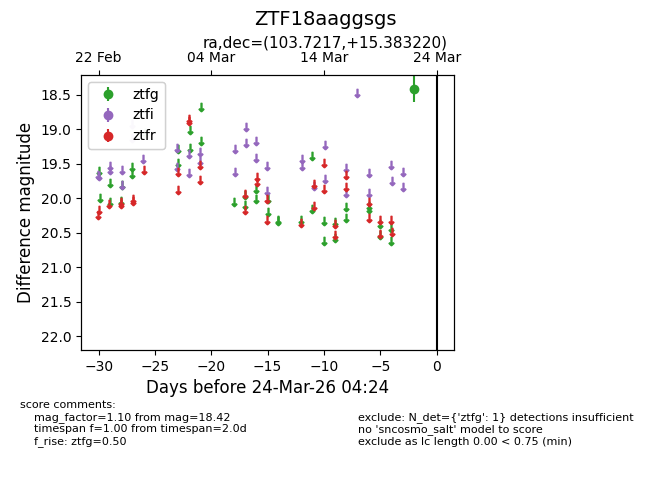
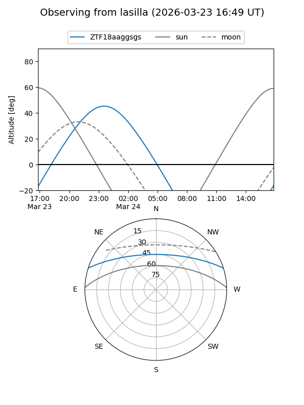
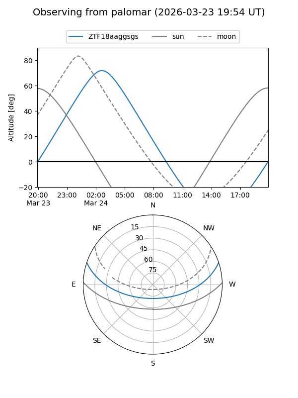

ZTF18aaggsgs
Target ZTF18aaggsgs at 2026-03-24 04:26
Aliases and brokers:
FINK: link
Lasair: link
ALeRCE: link
alt names
ZTF18aaggsgs (ztf,fink_ztf)
Coordinates:
equatorial (ra, dec) = 103.7217,+15.38322
equatorial (HMS+DMS) = 06:54:53.22,+15:22:59.59
galactic (l, b) = (199.5431,+7.69352)
Flags:
Photometry:
last ztfg=18.42
1 ztfg detections
Lightcurve

Visibility


Additional plots